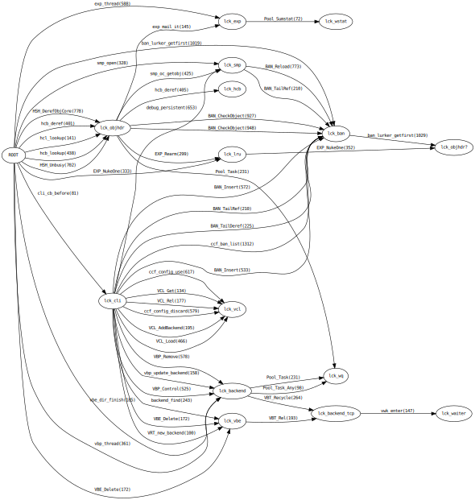

As you may have noticed, I am a bit of a IT-history nerd, and we do have some rather important early IT history in Denmark.
If you have a solid CS background, you have undoubtedly heard about both dining philosophers and Brinch-Hansens work in multiprogramming.
Multiprogramming is fundamentally hard, because you cannot have one thread holding lock A trying to get lock B, while another holds lock B trying to get lock A.
Brinch-Hansen did a lot of both theoretical and practical work in the area of multiprogramming and being both good at it and one of the pioneers, he was awarded the ACM Turing Prize for it.
You can read more about him here: Brinch-Hansen Archive
Along the way he came up with a trivial and practical way to guarantee that a given multiprogramming system was free of deadlocks: Draw the locking order and make sure all the arrows point to the right.
When we started working with multi-core systems in FreeBSD, we were sure to have deadlocks in our future, and we adopted and expanded a facility called "WITNESS" originally written for BSDI, which keeps an eye on Brinch-Hansens arrows in real time.
Historically I have been pretty good at avoiding deadlocks, it seems to come natural to me to think about locking order, but not everybody feels that way about them, and WITNESS have caught a lot of "Ohh, didn't think about that" situations over the years.
It is no accident that Varnish has a very simple locking structure, but as we add more and more flexibility and extensibility to Varnish it grows a little here and there, and I managed to introduce a lock-order reversal the other day - my first in about five years I think.
Since I'm obviously getting old and slipping up here, I though it was about time I carried out the Brinch-Hansen check on Varnish.
I briefly pondered porting WITNESS into Varnish, but it's 3k lines and we have extremely good code coverage in our regression tests so I decided to KISS and do it as post-processing.
I have added default-off debug code to emit VSL "Witness" records, taught varnishtest how to enable that code, and added a small python script to process the records into a nice plot:
And yo and behold: All the arrows point to the right.
phk